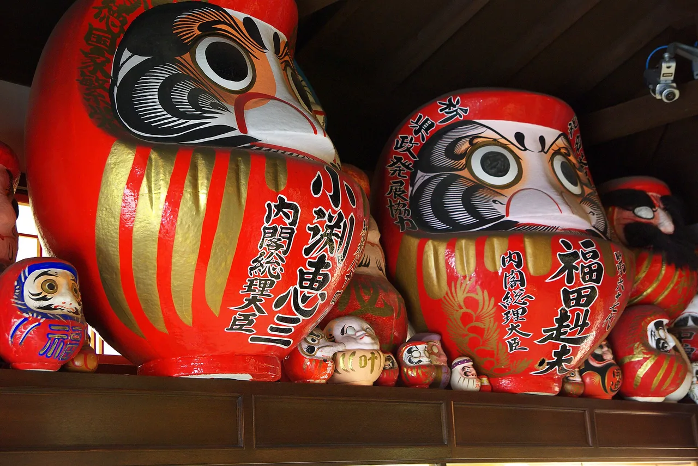

達磨市集：先畫哪隻眼睛，以及為何要歸還達磨
達磨是一種紅色、圓形、底部加重的不倒翁娃娃，兩眼皆為空白。許願時畫入一隻眼睛，願望實現後再畫入另一隻——然後，一年後，你應該將它帶回寺廟燃燒。最後這個環節往往被外文導覽省略，但這正是市集存在的原因：市集是你歸還去年達磨、領取今年達磨的地方。最重要的兩個市集日期固定：1月6至7日在高崎的少林山達磨寺，以及3月3至4日在東京西部的深大寺。

兩個市集及其公開時間
與11月的熊手市集每年日期不同不同，達磨市集的日期固定在曆法上的特定日子。兩座寺廟均公布了各自的行程，而兩份行程中都有令訪客驚訝的時間安排。
| 市集 | 日期 | 寺廟公告內容 |
|---|---|---|
| 少林山達磨寺少林山達磨寺 — 群馬縣高崎市 | 每年1月6日及7日 | 6日14:00舉行祈安法會；7日凌晨02:00舉行大星祭祈禱；7日10:00誦讀大般若經。達磨攤位設於正殿前。最近一屆市集，寺廟亦在正殿後方設置約30輛餐車並提供座位 |
| 深大寺深大寺 — 東京都調布市 | 每年3月3日及4日 | 寺廟全年最大活動，吸引逾10萬人參加。約300個達磨攤位。護摩火供儀式全天舉行，大約每30分鐘一場，從9:30至13:00，另有15:00一場；僧侶遊行於兩日的13:45出發 |
少林山凌晨02:00的祈禱說明這是一個通宵市集而非日間集市：寺廟自己的行事曆將一場重要法會安排在6日至7日之間的深夜。市集以外，寺廟辦公室及御朱印受付時間為9:00至17:00，祈禱受付時間為9:00至16:00，達磨堂開放時間為9:00至17:00。
本指南查核時，兩座寺廟均尚未公布2027年1月或3月的具體資訊，這屬正常情況——這些是固定的重複日期，詳細公告通常在數週前才發出。
哪隻眼睛——兩個官方說法其實一致
以英文搜尋，你會發現「先畫左眼」和「先畫右眼」兩種說法都被以同等自信地陳述。然而兩個日本官方資料說的是同一件事；只是參考框架不同，而翻譯時往往省略了這個框架。
高崎市從你的角度描述：許願時，畫入面對達磨時你的右側眼睛，待一年平安過去或願望實現後，再填入另一隻。
深大寺從達磨的角度描述：新達磨在其左眼寫入梵文字母a（阿）——而達磨的左眼，正是你面對它時右側的那隻眼睛。
面對達磨，許願時畫入你右側的眼睛。待願望實現或一年期滿前，讓你左側的眼睛保持空白。兩個官方說法描述的是同一隻眼睛——一個稱之為「面對時的右側」，另一個稱之為「達磨的左側」。
為何不能留著達磨
達磨不是可以無限期擺放的裝飾品。它承載著一整年的願望，年末時需歸還寺廟，在感謝火供中燃燒——與舊護符和破魔矢的處理方式相同。少林山將此描述為向守護你的達磨致謝。
每座寺廟均公布了相關時間：
- 少林山的達磨otakiage感謝法會於1月15日11:00在正殿後方舉行——距市集結束八天，讓你有時間先購入新達磨。
- 深大寺的達磨歸還受付從2月28日開始，持續至3月3日及4日，因此歸還與市集時間重疊。
這就是為何市集給人一種循環的感覺，而非單純的購物。人們帶著一個兩眼已畫滿、色澤已褪的舊達磨前來，交還後，帶著一個略大、眼睛空白的新達磨離去。
歸還達磨是習俗，並非規定，也沒有人期望訪客在1月飛回群馬。買一個小的，畫入你右側的眼睛，將歸還視為可選項。實用提示：達磨是紙漿製成的，中空且底部加重——相對體積而言重量輕，但容易被壓壞。隨身行李比托運行李更適合攜帶。
高崎：鶴、龜，以及一個無從查證的數字
少林山達磨寺自稱是吉祥達磨的發源地，高崎市也明確表示這裡是日本第一的達磨產地。高崎市還描述了辨識高崎達磨面孔的特徵：眉毛畫成鶴，鬍鬚畫成龜，兩種長壽動物融入臉部，肩膀上以金色書寫願望——生意興隆、家宅平安、心願成就、目標達成。
你在英文資料中也會隨處看到一個份額數字：「高崎生產日本80%的達磨，每年170萬個。」請謹慎看待這個數字。日本國立國會圖書館的參考服務追溯了這一說法，發現公開數字出入極大——1955年300萬個、1958年40萬個、1966年45萬個、1970至80年代初期130萬個、1990至2000年代以80%份額計170萬個、2010年代起90萬個——而且所有來源均未說明數字出處。當參考館員致電群馬縣達磨業者協同組合時，對方表示並未保存出貨或銷售統計，當地商工會議所自己的文章也得出結論：由於全國及高崎的數字均不明確，份額根本無從計算。
高崎無疑是這門工藝的中心。那個精確的百分比，不過是帶著小數點的民間傳說。
深大寺：眼睛是梵文
深大寺的市集是日本三大達磨市集之一，且有一項其他市集所沒有的特色：僧侶以梵文為你點眼。
在元三大師堂前設置的臨時點眼台，兩日均於9:00至16:30開放，僧侶將梵文字母a（阿）刷入新達磨的眼中——這是開啟字母表的音，象徵萬物的開始。當你帶回達磨時，另一隻眼睛將寫入un（吽），象徵終結的音，代表圓滿完成。這一對字母，正是寺廟山門守護神像名稱「阿吽」的由來——一尊張口，一尊閉口，象徵無言的默契。
圍繞這一活動，寺廟舉行全年最盛大的法會。護摩火供全天舉行，大約每半小時一場，從9:30至13:00，另有15:00一場，受付於各場開始前15分鐘截止；每場約25分鐘，堂內可容納60人。兩日的13:45均有盛裝遊行出發，若遇雨則移至室內，不對外開放。
寺院庭園裡的德國建築師
少林山有一個值得特地繞道的注腳，超越市集本身。寺院境內矗立著仙石亭，這棟小建築原為農業學者佐藤寬次所建——自1934年8月1日起，成為德國建築師Bruno Taut及其妻子的居所，他們於前一年離開了納粹德國。原本預計住滿百日，最終住了約兩年又三個月。境內一塊石碑留下了他的話：他深愛日本的文化。
寺廟的年度行事曆至今仍在每年12月24日為他舉行追悼，與誦經法會及新年鐘聲並列。
11月有酉之市熊手市集 →，1月初有七福神巡禮蓋章路線 →，1月6至7日則是達磨市集。若你更喜歡收集紙張而非實物，可從御朱印——神社與寺廟的印章 →，或城堡御城印 →開始。
你實際會用到的日文
| 日文 | 讀音 | 意思 |
|---|---|---|
| だるま市 | daruma-ichi | 達磨市集 |
| 縁起だるま | engi-daruma | 吉祥達磨——市集上販售的那種 |
| 目入れ | me-ire | 點眼（畫入眼睛） |
| 向かって右 | mukatte migi | 「面對時的右側」——解決點眼問題的關鍵詞 |
| 心願成就 | shingan jōju | 心願實現——常見的肩部文字 |
| 目標達成 | mokuhyō tassei | 目標達成——另一種常見的肩部文字 |
| お焚き上げ | otakiage | 舊護符與達磨的感謝燃燒儀式 |
| 納め所 | osamesho | 歸還去年達磨的受付台 |
| 厄除け | yakuyoke | 消災除厄——深大寺祭典的目的 |
| 護摩 | goma | 護摩火供儀式 |
| 七草 | nanakusa | 1月7日的七種春草，少林山祭典以此命名 |
| 阿吽 | a-un | 始與終——深大寺的兩個梵文眼睛 |
想讓這些詞彙記得更牢？免費JLPT對戰測驗以間隔重複法訓練旅遊與文化詞彙。
常見問題
Q. 達磨先畫哪隻眼睛？
A. 面對達磨時你右側的那隻眼睛。高崎市描述許願時畫入面對達磨的右眼；深大寺描述新達磨在其左眼寫入梵文字母a。兩者描述的是同一隻眼睛，只是從相反的角度說明。
Q. 日本的達磨市集是什麼時候？
A. 高崎的少林山達磨寺每年1月6日及7日舉辦七草祭達磨市集。東京調布市的深大寺每年3月3日及4日舉辦市集。兩個日期均為固定日期，不隨曆法移動。
Q. 舊達磨該怎麼處理？
A. 歸還寺廟，在感謝法會中燃燒。少林山於1月15日11:00在正殿後方舉行達磨燃燒儀式；深大寺從2月28日起至市集期間開放歸還受付。
Q. 深大寺達磨市集有何特別之處？
A. 僧侶親自以梵文為達磨點眼。新達磨寫入字母a，象徵萬物的開始；歸還的達磨寫入un，象徵圓滿完成。元三大師堂前的點眼台兩日均於9:00至16:30開放。
Q. 高崎真的生產日本80%的達磨嗎？
A. 高崎市表示這裡是全國最大的達磨產地，但廣泛引用的80%及170萬個數字並不可靠。日本國立國會圖書館的參考服務發現公開數字前後矛盾且無來源，業者協同組合表示未保存統計數據，當地商工會議所也得出結論認為份額無從計算。
Q. 達磨為什麼是那個形狀？
A. 底部加重，被推倒後能自行立起，這正是它作為許願物的核心意義。高崎版本還在眉毛畫入鶴、鬍鬚畫入龜——兩者均為長壽象徵——並在肩膀以金色書寫願望。
Q. 市集以外可以參觀少林山嗎？
A. 可以。寺廟辦公室及御朱印受付時間為9:00至17:00，祈禱受付時間為9:00至16:00，達磨堂開放時間為9:00至17:00。Bruno Taut自1934年8月起在此居住約兩年又三個月的仙石亭，就在同一境內。